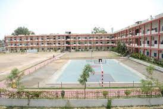

Hi there , I am Abhishek Yelisetti. I love to explore new technologies and try to make the most of them. I love solving challenging problems and also try to learn something new everyday.
MY SCHOOL - THE HYDERABAD PUBLIC SCHOOL
The school was established in 1972. It is a branch of Hyderabad Public School located at Begumpet. It has over 2300 students in grades PP1 through 12; teaching is in English. The teacher student ratio is 1:23. The school is affiliated with the Central Board of Secondary Education, New Delhi, and is a member of Indian Public Schools’ Conference. Admission into the school is through a recently introduced system of drawing lots. The school is an ethical, non-profitable, co-educational institution.
The school in a 40-acre (160,000 m2) closed campus has playgrounds for cricket, hockey, basketball, football, volleyball, badminton, kabaddi, tennis, tennikoit and table tennis .There is a children’s park near the primary wing and parallel bars adjacent to the boarding house. Societies include the Science Club, the History Society, the Geography Society, the Debating Societies in English, Hindi and Telugu, the Quiz Contest Conclave and Gyaneshwar the Dramatics Society. The children function as the secretaries of the societies under the guidance of the teachers as chairman. Investiture ceremony and Sports Day are held annually.
MY COLLEGE - KESHAV MEMORIAL INSTITUTE OF TECHONOLOGY

Keshav Memorial Institute of Technology (KMIT), established in year 2007, is one of the engineering colleges in the state of Telangana . KMIT is sponsored by Keshav Memorial Education Society (KMES), known in Hyderabad, for the past 75 years, for running various educational institutions.There is also another institute which is sponsored by KMES,that is Keshav Memorial Institute of Commerce and Sciences(KMICS).KMIT is approved by All India Council for Technical Education (AICTE), New Delhi, and affiliated to Jawaharlal Nehru Technological University (JNTU), Hyderabad and recognized by Govt of Telangana. KMIT campus is located in Narayanaguda, a central place in the city of Hyderabad.
KMIT Finishing School is set up with affiliation to the Jawaharlal Nehru Technological University, Hyderabad, one of its kind is exclusive to KMIT, where students are trained in various Software technologies including iPhone Applications and Android Apps development, SQL and so on along with industrial orientation which helps them in their career path and to ensure the college motto is realized." Creating Engineers with a 360 Degree Vision". The students are selected after an examination in C Language Programming and general aptitude and are interviewed for securing seats into the Finishing School.
MY HOBBIES AND INTERESTS